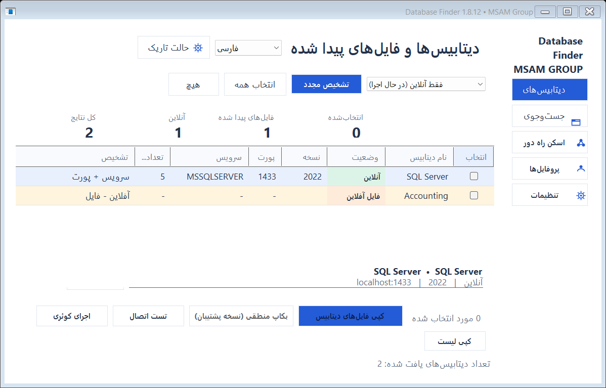
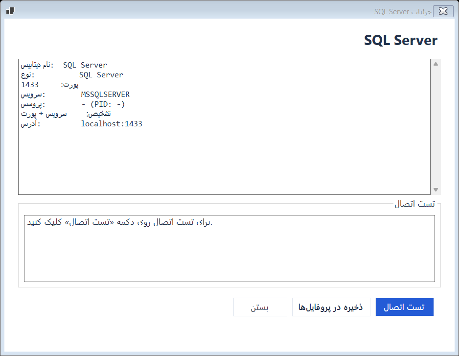
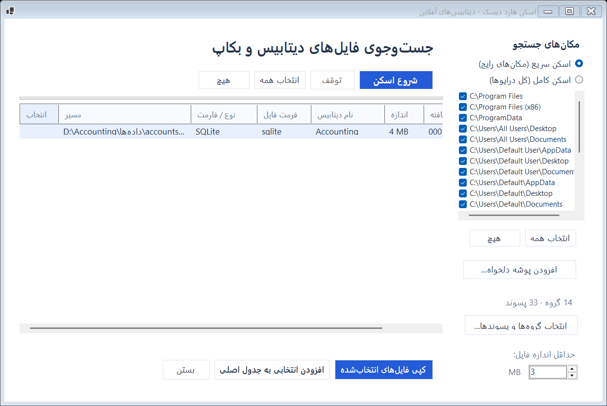
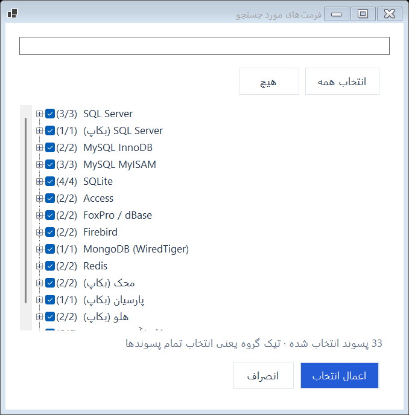
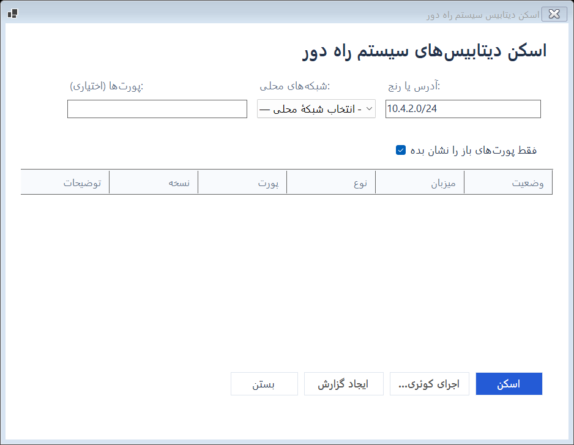
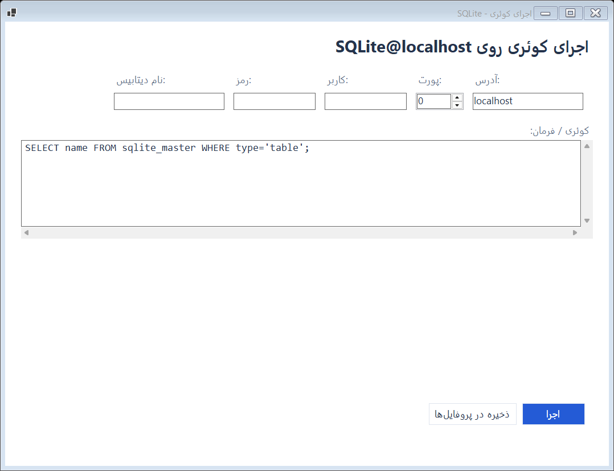
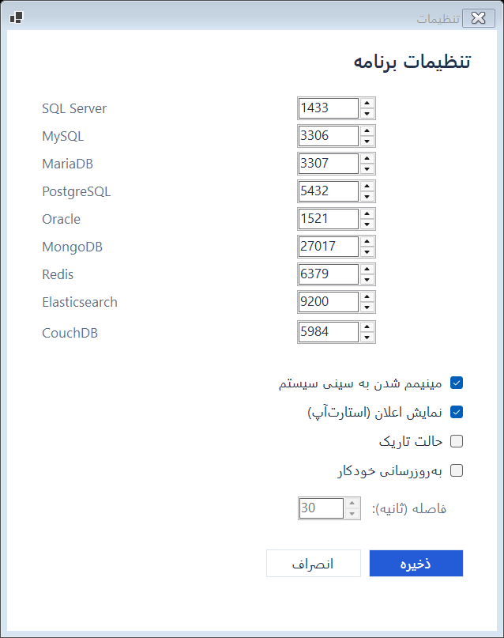
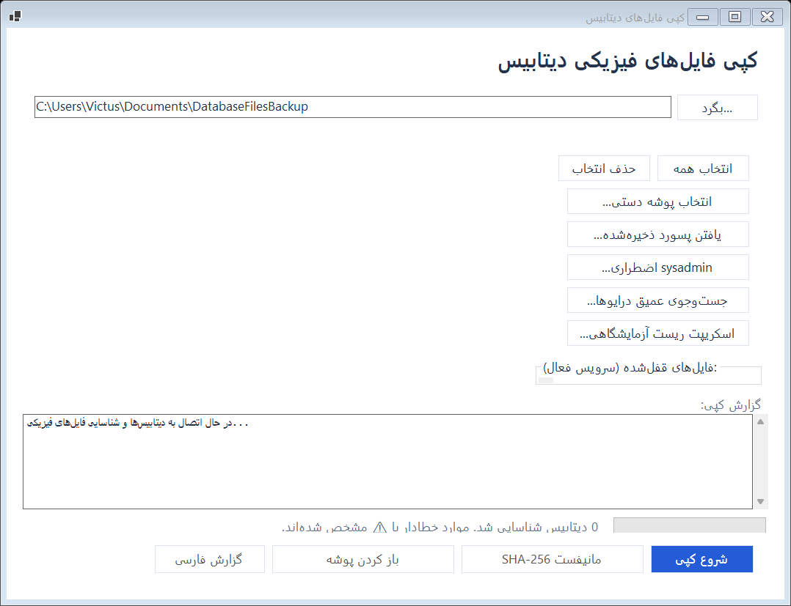
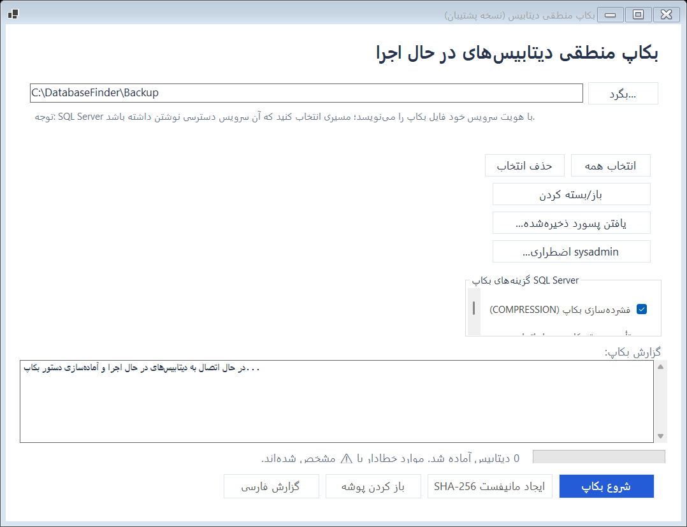

۱. معرفی برنامه
Database Finder یک ابزار دسکتاپ Windows برای پیدا کردن دیتابیسهای فعال، دیتابیسهای آفلاین و فایلهای بکاپ است. برنامه علاوه بر تشخیص، امکان اتصال، اجرای Query، کپی فیزیکی، بکاپ منطقی و تولید گزارش هشدار را فراهم میکند.
کشف آنلاین
تشخیص سرویسهای Windows، پردازشها و پورتهای باز برای دیتابیسهایی مانند SQL Server، MySQL، PostgreSQL، MongoDB و Redis.
کشف آفلاین
پیدا کردن MDF، LDF، NDF، BAK، SQLite، Access، فایلهای حسابداری و آرشیوهای احتمالی حتی وقتی دیتابیس اجرا نمیشود.
برداشت مستند
کپی فایلها و بکاپها همراه با SHA-256، زمان اجرا، وضعیت، نسخهٔ سرویس و مانیفست ساختاریافته.
زبان و محیط
رابط فارسی و انگلیسی، حالت تاریک اختیاری، System Tray، پشتیبانی High-DPI و نسخهٔ مستقل بدون نیاز به نصب .NET.
۲. نصب و اجرا
نسخهها
| نسخه | کاربرد | نیازمندی |
|---|---|---|
| DatabaseFinder.exe | نسخهٔ مستقل کامل | بدون نیاز به نصب .NET Desktop Runtime |
| DatabaseFinder-Light.exe | نسخهٔ کمحجم | .NET 8 Desktop Runtime برای Windows x64 |
- فایل مناسب را از صفحهٔ Releases دریافت کنید.
- در صورت استفاده از کپی فایلهای قفلشده یا کنترل سرویسها، برنامه را با Administrator اجرا کنید.
- برای صحت دانلود، SHA-256 فایل را با `SHA256SUMS.txt` مقایسه کنید.
۳. صفحهٔ اصلی
صفحهٔ اصلی مرکز کنترل برنامه است. نوار کناری برای رفتن به بخشها و نوار بالایی برای زبان، تغییر تم و اسکن استفاده میشود.

کارتهای خلاصه
- کل نتایج: مجموع ردیفهای فعلی.
- آنلاین: سرویسها و دیتابیسهای در حال اجرا.
- فایلهای پیدا شده: نتایج آفلاین و فایلهای بکاپ.
- انتخابشده: ردیفهایی که برای کپی یا بکاپ تیک خوردهاند.
تغییر حالت نمایش
دکمهٔ تم در هدر صفحهٔ اصلی بین حالت تاریک و روشن جابهجا میشود. انتخاب شما در تنظیمات ذخیره میشود و روی فرمهای بعدی نیز اعمال خواهد شد.
وضعیت ردیف
ستون «وضعیت» با رنگ و متن مشخص میکند که نتیجه آنلاین، فایل آفلاین، فایل بکاپ یا سرویس متوقف است. با انتخاب ردیف، پنل جزئیات پایین جدول بهروزرسانی میشود.

۴. کشف آنلاین
در حالت «فقط آنلاین»، برنامه سه روش تشخیص را ترکیب میکند:
سرویس Windows
نام سرویس و مسیر اجرایی برای شناسایی SQL Server، MySQL، PostgreSQL و سایر موتورهای شناختهشده بررسی میشود.
پردازش
پردازشهایی مانند `sqlservr.exe`، `mysqld.exe` و `postgres.exe` به همراه PID نمایش داده میشوند.
پورت باز
پورتهای شناختهشده و پورتهای سفارشی در تنظیمات بررسی میشوند. نسخهٔ سرویس با تست اتصال دریافت میشود.
Instanceهای SQL
Instance پیشفرض `MSSQLSERVER` و Instanceهای نامگذاریشده مانند `MSSQL$SEPIDAR` قابل تشخیص هستند.
سرویس متوقف
اگر SQL Server نصب باشد اما متوقف باشد، برنامه آن را با وضعیت «Service stopped» نمایش میدهد. در ورود اولیه هشدار داده میشود و امکان Start یا Enable and start وجود دارد.
۵. اسکن آفلاین هارد

- از منوی کناری «جستوجوی فایل» را باز کنید.
- در «مکانهای جستوجو»، اسکن سریع، اسکن کامل یا پوشهٔ دلخواه را انتخاب کنید.
- فرمتهای موردنظر را انتخاب کنید؛ میتوانید گروه یا پسوندهای خاص را انتخاب کنید.
- حداقل اندازه را تعیین و روی «شروع اسکن» کلیک کنید.
- در پایان، نتایج را تیک بزنید و برای کپی مستقیم یا افزودن به جدول اصلی اقدام کنید.
اعتبارسنجی محتوا
تشخیص فقط بر اساس پسوند نیست. برنامه امضای محتوای فایل را نیز بررسی میکند تا فایلهایی مانند `program.exe.bak` بهاشتباه بکاپ دیتابیس گزارش نشوند.

۶. اسکن شبکه

در منوی «اسکن راه دور» میتوانید یک IP، بازه، شبکهٔ محلی یا CIDR وارد کنید. برنامه با همزمانی محدود پورتها را بررسی میکند و برای SQL Server از SQL Browser/SSRP نیز استفاده میکند.
- تیک «فقط پورتهای باز» نتایج بسته را پنهان میکند.
- پورتهای سفارشی را با کاما یا فاصله وارد کنید.
- برای بازههای بزرگ، زمان اسکن و ترافیک شبکه را در نظر بگیرید.
- پس از اسکن میتوانید گزارش TXT، JSON و HTML تولید کنید.
۷. اجرای Query

یک ردیف را انتخاب و «اجرای کوئری» را باز کنید. نوع اتصال بر اساس موتور انتخاب میشود.
- SQL Server با احراز هویت SQL یا Windows Authentication
- MySQL و MariaDB با نام کاربری و رمز
- PostgreSQL با پروفایل اتصال
- SQLite با مسیر فایل
- Redis با اجرای دستورهای پشتیبانیشده
۸. پروفایل و تنظیمات

پروفایلها
برای اتصالهای تکراری، میزبان، پورت، نام کاربری، دیتابیس و رمز را ذخیره کنید. برنامه هنگام شمارش دیتابیسها و عملیات اتصال از پروفایل مناسب استفاده میکند.
تنظیمات
- پورت سفارشی هر موتور
- کوچکشدن به System Tray
- اعلانها
- Refresh خودکار
- حالت Dark/Light
۹. کپی فیزیکی فایلها

- ردیفهای موردنظر را در صفحهٔ اصلی تیک بزنید.
- «کپی فایلهای دیتابیس» را باز کنید و مقصد را انتخاب کنید.
- درخت دیتابیسها و فایلها را بررسی و موارد لازم را انتخاب کنید.
- برای فایل قفلشده یکی از روشهای VSS، توقف سرویس یا گزارش خطا را انتخاب کنید.
- پیشرفت، تعداد موفق/ناموفق و حجم نهایی را بررسی کنید.
روشهای فایل قفلشده
- VSS: کپی از Snapshot بدون توقف سرویس؛ روش پیشنهادی و نیازمند Administrator.
- Stop/Start: سرویس فقط در طول عملیات متوقف و سپس سرویسهایی که برنامه متوقف کرده دوباره اجرا میشوند.
- Report only: فایل قفلشده گزارش میشود و کپی نمیگردد.
۱۰. بکاپ منطقی

بکاپ منطقی از ابزار بومی موتور استفاده میکند و خروجی قابل بازیابی تولید میکند.
| موتور | روش |
|---|---|
| SQL Server | BACKUP DATABASE با فشردهسازی، Verify و Checksum |
| MySQL / MariaDB | mysqldump با تراکنش، روتین و Trigger |
| PostgreSQL | pg_dump با قالب Custom |
| Redis | اجرای SAVE و کپی dump.rdb |
| MongoDB | mongodump در صورت نصب ابزارها |
پس از پایان، خلاصهٔ موفق، ناموفق و حجم خروجی نمایش داده میشود. اگر هیچ فایل معتبر تولید نشود، عملیات موفق اعلام نمیشود.
۱۱. مانیفست و گزارش
بعد از کپی یا بکاپ موفق، برنامه در مقصد پرونده فایلهای زیر را تولید میکند:
manifest.txt
گزارش قابل چاپ با مسیرها، اندازه، زمان، وضعیت و SHA-256.
manifest.md
نسخهٔ مناسب برای مشاهده در GitHub و Markdown Viewer.
manifest.json
اطلاعات ساختاریافته برای پردازش ماشینی، نسخهٔ سرویس و جزئیات پرونده.
گزارش HTML
گزارش فارسی راستبهچپ برای بازکردن در Word و تبدیل به PDF.
۱۲. سرویسهای متوقف و Instanceها
برنامه SQL Serverهای پیشفرض و نامگذاریشده را از Registry و سرویسهای Windows تشخیص میدهد. نمونههای رایج:
اگر سرویس نصب ولی متوقف باشد، ردیف آن با وضعیت مشخص دیده میشود. برای سرویس Disabled، گزینهٔ Enable and start ابتدا Startup Type را به Manual تغییر میدهد و سپس سرویس را اجرا میکند.
۱۳. میانبرها و رفتارهای سریع
| میانبر | عملکرد |
|---|---|
| F5 | اسکن مجدد دیتابیسها |
| Ctrl+A | انتخاب همهٔ نتایج |
| Ctrl+Shift+A | لغو انتخاب همه |
| Ctrl+C | کپی لیست نتایج |
دابلکلیک روی ستون تعداد دیتابیسها، فهرست دیتابیسهای همان سرویس را باز میکند. کوچککردن برنامه میتواند آن را به System Tray بفرستد.
۱۴. عیبیابی
سرویس در جدول دیده نمیشود
مطمئن شوید سرویس Windows نصب است، برنامه با دسترسی مناسب اجرا شده و Scan mode روی «آنلاین» یا «هر دو» قرار دارد. برای SQL Server متوقف، بخش سرویسهای متوقف را بررسی کنید.
فایل قفل است
برنامه را با Administrator اجرا و VSS را انتخاب کنید. اگر VSS در دسترس نبود، Stop/Start را با دقت و پس از تأیید وضعیت سرویس استفاده کنید.
Query اجرا نمیشود
میزبان، پورت، پروفایل و مجوز کاربر را بررسی کنید. برای SQL Server میتوانید Windows Authentication را امتحان کنید.
برنامه بدون خطای واضح متوقف شد
فایل فنی خطا در مسیر زیر ذخیره میشود:
آپدیت انجام نمیشود
اتصال اینترنت و وجود فایل متناظر نسخهٔ Light یا مستقل را بررسی کنید. برنامه قبل از جایگزینی فایل، SHA-256 آن را با `SHA256SUMS.txt` مقایسه میکند.